Installing BitRock InstallBuilder
Installing on Windows
You can download the BitRock InstallBuilder binary from the BitRock website. It should have a name similar to installbuilder-professional-5.1.1-windows-installer.exe .
You can start the application by double-clicking on the downloaded file.
You will be greeted by the Welcome screen shown in Figure 1 .
Figure 1 : Windows Welcome Screen
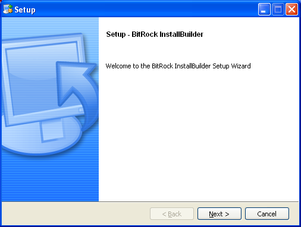
Pressing Next will take you to the License Agreement page, shown in Figure 2.
You need to accept the agreement to continue the installation. The next step is to select the installation directory
(Figure 3). The default value is C:\Program Files\BitRock InstallBuilder\
Figure 2 : Windows License Agreement
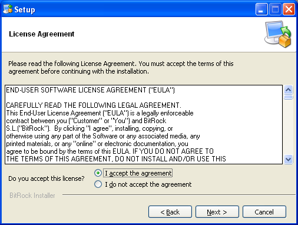
Figure 3 : Windows Select Installation Directory
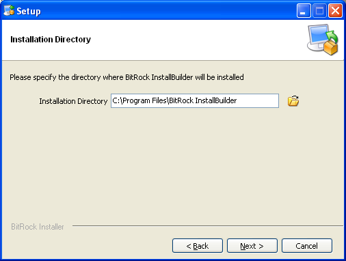
The rest of this guide assumes you installed BitRock InstallBuilder in C:\Program Files\BitRock InstallBuilder\
You are now ready to start the installation (Figure 4), which will take place once you press Next
(Figure 5). When the installation completes, you will see the Installation Completed page shown in
Figure 6. You may choose to view the README file at this point.
| If you found a problem and could not complete the installation, please refer to the Troubleshooting section or
contact us at support@bitrock.com. Please refer to the Support section for details on what information you should include
with your request. |
Figure 4 : Windows Ready To Install
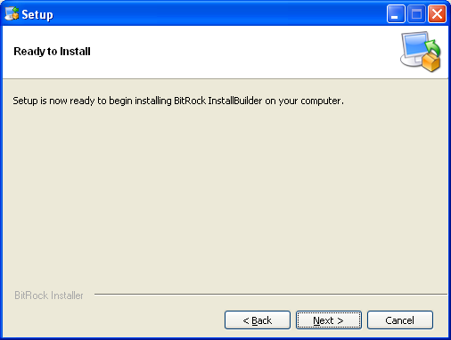
Figure 5 : Windows Installation Under Way
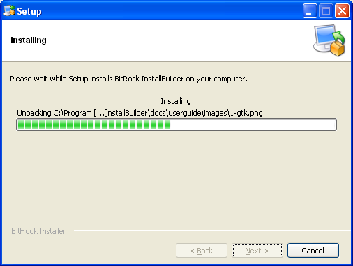
Figure 6 : Windows Installation Completed
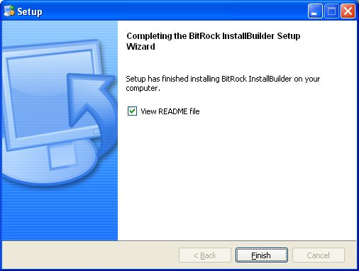
Installing on Unix
The process for installing on Linux, OpenBSD, FreeBSD, AIX, HP-UX, IRIX, and Solaris is identical. The rest of this section assumes you are running Linux.
You can download the BitRock InstallBuilder binary from the BitRock website. It should have a name similar to installbuilder-professional-5.1.1-linux-installer.bin .
Make sure it has read and executable permissions by right clicking in the file, selecting "Properties" and
then setting the appropriate permissions. Alternatively you can issue the following shell command.
$ chmod 755 installbuilder-professional-5.1.1-linux-installer.bin |
You can now start the installation by double-clicking on the file from your Desktop environment or by invoking
it directly from the command line with:
$ ./installbuilder-professional-5.1.1-linux-installer.bin |
You will be greeted by the Welcome screen shown in Figure 7 .
Figure 7 : Linux Welcome Screen
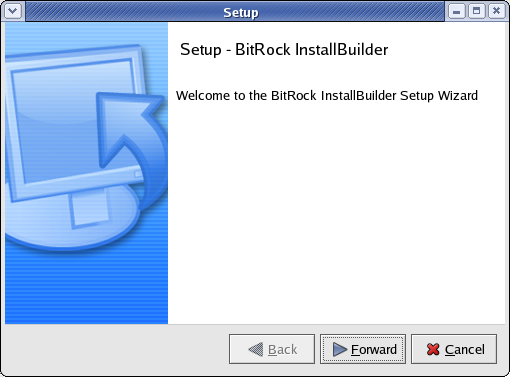
Pressing Next will take you to the License Agreement page, shown in Figure 8.
You need to accept the agreement to continue the installation. The next step is to select the installation directory
(Figure 9). The default value will be a folder on your home directory
if you are running the installer as a regular user (recommended) or /opt/installbuilder-5.1.1/ if you are running the installation as superuser
(root). If the destination directory does not exist, it will be created.
Figure 8 : Linux License Agreement
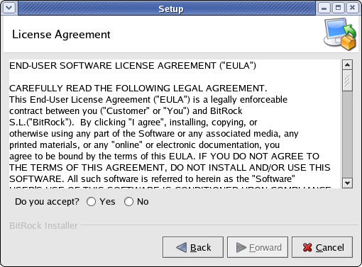
Figure 9 : Linux Select Installation Directory
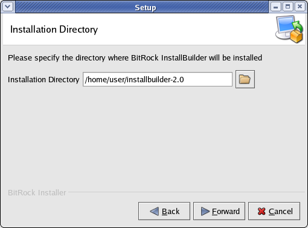
The rest of this guide assumes you installed bitrock in /home/user/installbuilder-5.1.1/
You are ready to start the installation now (Figure 10), which will take place once you press Next
(Figure 11). When the installation finishes, you will see the Installation Finished page shown in
Figure 12. You may choose to view the README file at this point.
| If you found a problem and could not complete the installation, please refer to the Troubleshooting section or
contact us at support@bitrock.com. Please refer to the Support section for details on what information you should include
with your request. |
Figure 10 : Linux Ready To Install
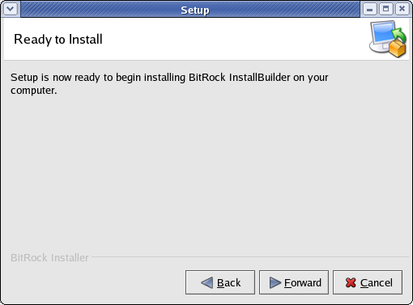
Figure 11 : Linux Installation Under Way
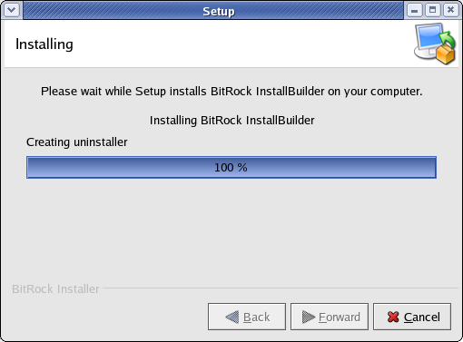
Figure 12 : Linux Installation Completed
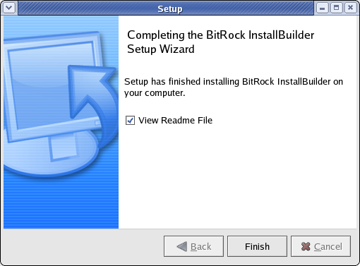
Directory Structure
The installation process will create several directories:
bin: BitRock InstallBuilder application binaries.paks: Support files necessary for creating installers.projects: Project files for your installers. See note below for Windows Vista.docs: Product documentation.demo: Files for the sample demo project.output: Finished installers. See note below for Windows Vista.
On Windows Vista, in line with the Application Development Requirements
for User Account Control (UAC), the projects and output
directories are installed under the user Documents folder, so usually
they can be found at C:\Users\user\Documents\InstallBuilder\projects
and C:\Users\user\Documents\InstallBuilder\output, respectively
You are ready now to start the application and create your first installer, as described in the next section "Building your First Installer"